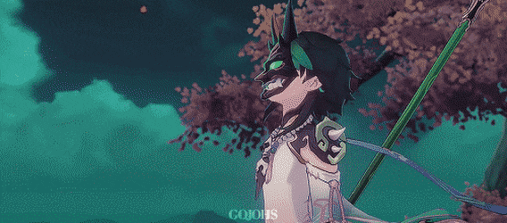
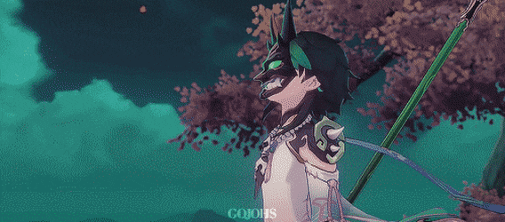
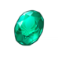
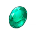

He is an adeptus, under the name Alatus, and the only known remaining member of the five foremost Yakshas dispatched by Morax to subdue the demonic spirits that plagued Liyue. He currently resides in Wangshu Inn and mostly secludes himself from crowds and human interactions.
One of the "Mighty and Illuminated Adepti" guarding Liyue, also heralded as the "Guardian yaksha." Despite his appearance as a young man, occasional legends about him have been documented in ancient books for thousands of years. He is especially fond of Wangshu Inn's Almond Tofu. The reason is that the dish tastes just like the "dreams" he used to devour.
 

 Vayuda Turquoise
Quinxin
Slime Concentrate
Vayuda Turquoise
Quinxin
Slime Concentrate